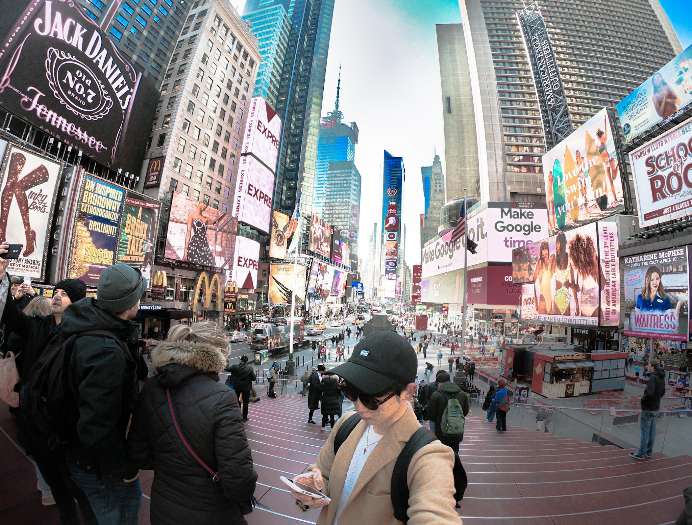

About me
山形県出身のエンジニアです。
以前はセブ島の語学学校で働いていました。
英語環境での業務も経験しました。
現在はフロントエンド、バックエンドともにスキルの向上に励んでいます。
エンジニアを目指すきっかけ
私は前職のセブ島での仕事を通し、初めて人生でエンジニアの方と出会いました。
それまでは、エンジニアというイメージが私の中でとても漠然としたものでしたが、プログラミング技術を通し、顧客が抱えている問題を改善し社会貢献ができのではないかと思い始めました。
現代ではITなくしては生活できないというくらいどの産業でもIT技術は活用されています。将来的には地元である山形県、前職のセブ島などIT技術を通し地域、国の活性化の実現できるのではないかと思いプログラミングを学び始めました。
I like traveling
海外旅行に行き、日本とは異なる文化、考え方に触れるのが大好きです。 たくさんの国の人とコミニケーションが取りたいので英語学習は毎日しています。
